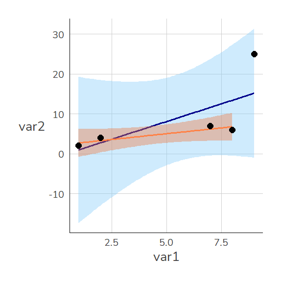

dat1 <- data.frame(id = 1:5,
var1 = c(1,2,7,8,9),
var2 = c(2,4,7,6,25))
dat1 id var1 var2
1 1 1 2
2 2 2 4
3 3 7 7
4 4 8 6
5 5 9 25Zum Einstieg betrachten wir zunächst einen (fiktiven) Datensatz mit lediglich fünf Fällen. Mit dem data.frame Befehl können wir einen Datensatz erstellen. Unserer hat zunächst lediglich zwei Variablen: var1 und var2
dat1 <- data.frame(id = 1:5,
var1 = c(1,2,7,8,9),
var2 = c(2,4,7,6,25))
dat1 id var1 var2
1 1 1 2
2 2 2 4
3 3 7 7
4 4 8 6
5 5 9 25lm()Regressionsmodelle in R lassen sich mit lm() erstellen. Hier geben wir das Merkmal an, dass auf der y-Achse liegt (die abhängige Variable) und nach einer ~ das Merkmal für die x-Achse (unabhängige Variable). Die Interpretation des Ergebnisses wird uns die kommenden Wochen beschäftigen.
lm(var2~ var1, data = dat1)
Call:
lm(formula = var2 ~ var1, data = dat1)
Coefficients:
(Intercept) var1
-0.782 1.774 Der Wert unter var1 gibt an, um wieviel sich die Gerade pro “Schritt nach rechts” nach oben/unten verändert. Die Gerade steigt also pro Einheit von var1 um 1.7744361. Die Ergebnisse können wir unter m1 ablegen:
m1 <- lm(var2~ var1, data = dat1) Mit summary() bekommen wir dann eine Regressionstabelle:
summary(m1)
Call:
lm(formula = var2 ~ var1, data = dat1)
Residuals:
1 2 3 4 5
1.008 1.233 -4.639 -7.414 9.812
Coefficients:
Estimate Std. Error t value Pr(>|t|)
(Intercept) -0.782 6.612 -0.118 0.913
var1 1.774 1.048 1.693 0.189
Residual standard error: 7.644 on 3 degrees of freedom
Multiple R-squared: 0.4886, Adjusted R-squared: 0.3182
F-statistic: 2.867 on 1 and 3 DF, p-value: 0.189Wie schon bei den Zusammenhangsmaßen können wir auch hier die einzelnen Werte mit View() ansehen:
Besonders hilfreich ist $coefficients:
m1$coefficients(Intercept) var1
-0.7819549 1.7744361 summary(m1)$coefficients Estimate Std. Error t value Pr(>|t|)
(Intercept) -0.7819549 6.611617 -0.1182698 0.9133283
var1 1.7744361 1.048012 1.6931453 0.1890031Mit geom_smooth(method = "lm") können wir Regressionsgeraden auch in {ggplot2} darstellen: Unser Modell mit var1 und var2 können wir so darstellen:
ggplot(dat1, aes(x = var1, y = var2)) +
geom_point(size = 2) +
geom_smooth(method = "lm", color = "darkblue" , fill = "lightskyblue", size = .65) 
Hier scheinen wir einen Ausreißer zu haben. In unserem übersichtlichen Datensatz ist der schnell gefunden. In größeren Datensätzen hilft uns geom_text():
ggplot(dat1, aes(x = var1, y = var2)) +
geom_point(size = 2) +
geom_smooth(method = "lm", color = "darkblue" , fill = "lightskyblue", size = .65) +
geom_text(data = dat1 %>% filter(var2 > 20), aes(y = var2+2, label = id), color = "sienna1")
Wir können nämlich einzelne geom_ auch nur für ein Subset angeben - dazu vergeben wir data = neu (übernehmen also nicht die Auswahl aus dem Haupt-Befehl ggplot()) und setzen darin einen filter(). Außerdem verschieben wir mit var2+2 das Label etwas über den Punkt.
Wenn wir jetzt das Modell nochmal berechnen wollen, haben wir zwei Möglichkeiten:
Wir erinnern uns, dass wir in R mehrere data.frame-Objekte im Speicher halten können. Daher können wir leicht einen neuen data.frame erstellen, der nur die Beobachtungen mit var2 < 20 enthält und diesen dann für unseren lm()-Befehl verwenden:
dat1_u20 <- dat1 %>% filter(var2<20)
m2a <- lm(var2~ var1, data = dat1_u20)
summary(m2a)
Call:
lm(formula = var2 ~ var1, data = dat1_u20)
Residuals:
1 2 3 4
-0.7162 0.7027 0.7973 -0.7838
Coefficients:
Estimate Std. Error t value Pr(>|t|)
(Intercept) 2.1351 0.9485 2.251 0.1532
var1 0.5811 0.1746 3.327 0.0797 .
---
Signif. codes: 0 '***' 0.001 '**' 0.01 '*' 0.05 '.' 0.1 ' ' 1
Residual standard error: 1.062 on 2 degrees of freedom
Multiple R-squared: 0.847, Adjusted R-squared: 0.7705
F-statistic: 11.07 on 1 and 2 DF, p-value: 0.07967lm() filternWir können filter()-Befehl auch direkt in das data=-Argument von lm() bauen:
m2b <- lm(var2~ var1, data = dat1 %>% filter(var2<20))
summary(m2b)
Call:
lm(formula = var2 ~ var1, data = dat1 %>% filter(var2 < 20))
Residuals:
1 2 3 4
-0.7162 0.7027 0.7973 -0.7838
Coefficients:
Estimate Std. Error t value Pr(>|t|)
(Intercept) 2.1351 0.9485 2.251 0.1532
var1 0.5811 0.1746 3.327 0.0797 .
---
Signif. codes: 0 '***' 0.001 '**' 0.01 '*' 0.05 '.' 0.1 ' ' 1
Residual standard error: 1.062 on 2 degrees of freedom
Multiple R-squared: 0.847, Adjusted R-squared: 0.7705
F-statistic: 11.07 on 1 and 2 DF, p-value: 0.07967Wenn wir diese verschiedenen Modelle jetzt vergleichen möchten, bietet sich eine Tabelle mit den
install.packages("modelsummary")library(modelsummary)
modelsummary(list(m1,m2a,m2b))| Model 1 | Model 2 | Model 3 | |
|---|---|---|---|
| (Intercept) | −0.782 | 2.135 | 2.135 |
| (6.612) | (0.949) | (0.949) | |
| var1 | 1.774 | 0.581 | 0.581 |
| (1.048) | (0.175) | (0.175) | |
| Num.Obs. | 5 | 4 | 4 |
| R2 | 0.489 | 0.847 | 0.847 |
| R2 Adj. | 0.318 | 0.770 | 0.770 |
| AIC | 38.0 | 15.1 | 15.1 |
| BIC | 36.8 | 13.2 | 13.2 |
| Log.Lik. | −15.987 | −4.531 | −4.531 |
| F | 2.867 | 11.072 | 11.072 |
| RMSE | 5.92 | 0.75 | 0.75 |
…übrigens: wir können auch in geom_smooth() filtern:
ggplot(dat1, aes(x = var1, y = var2)) +
geom_smooth(method = "lm", color = "darkblue" , fill = "lightskyblue", size = .65) +
geom_smooth(data = dat1 %>% filter(var2<20),
method = "lm", color = "sienna1" , fill = "sienna2", size = .65) +
geom_point(size = 2) 
# https://strengejacke.github.io/ggeffects/index.htmllibrary(survey)
etb18 <- haven::read_dta("./data/BIBBBAuA_2018_suf1.0.dta") %>%
filter(F518_SUF < 99998, zpalter < 100)
modl <- "F518_SUF ~ zpalter + I(zpalter^2)"
m2 <- lm(modl, data = etb18)
etb18_weighted <- svydesign(id = ~intnr,
weights = ~gew2018,
data = etb18)
survey_m2 <- survey::svyglm(modl, family = gaussian(), data = etb18,design = etb18_weighted)
modelsummary::modelsummary(list("glm()"=m2,"svyglm()"= survey_m2),gof_omit = "RM|IC|Log")| glm() | svyglm() | |
|---|---|---|
| (Intercept) | 586.343 | 118.307 |
| (381.240) | (338.854) | |
| zpalter | 110.543 | 121.639 |
| (17.556) | (17.635) | |
| I(zpalter^2) | −0.959 | −1.116 |
| (0.194) | (0.213) | |
| Num.Obs. | 16543 | 16543 |
| R2 | 0.008 | 0.013 |
| R2 Adj. | 0.008 | 0.013 |
| F | 64.956 | 109.810 |
Erstellen Sie wie folgt einen Beispieldatensatz (Sie können aber gerne auch eigene, andere Werte verwenden)
dat12 <- data.frame(var1 = c(12,10,24,28,23) ,
var2 = c(17,16, 3, 5, 8))var2!dat12 ab (siehe S.1)var2? (Stichwort Residuen)dat12 ab.m2 mit einem linearen Regressionsmodell (lm) mit var2 als abhängiger und var1 als unabhängiger Variable! (siehe hier)m2 - was können Sie erkennen? Besteht ein positiver oder negativer Zusammenhang zwischen var1 und var2?m2 jeweils in einer Spalte in dat12 ab.m2? Wie hoch ist die Summe der quadrierten Residuen für m2?m2. Berechnen Sie das \(R^2\) für m2! (siehe hier)Dieses Prinzip funktioniert natürlich genauso für größere Datensätze, zum Beispiel den Allbus 2016. Untersuchen Sie den Zusammenhang zwischen Alter (age) und dem Einkommen (inc) der weiblichen, in Vollzeit erwerbstätigen Befragten!
## Arbeitsverzeichnis in den Ordner mit dem Datensatz setzen:
setwd("C:/Lehre")
a16 <- read.csv("allbus2016.csv", sep = ";", header = T) ## einlesen
library(dplyr) ## für die Pipe und select/filterZunächst müssen wir dann die Missings mit NA überschreiben:
a16$age[a16$age<0] <- NA
a16$inc[a16$inc<0] <- NAMit einem filter-Befehl können wir dann nur die Beobachtungen auswählen, die für age und inc nicht Missing sind (also is.na() gleich FALSE ist):
a16 <- a16 %>% filter(!is.na(inc), !is.na(age))a16f erstellen, das nur in Vollzeit erwerbstätige Frauen enthält:a16f <- a16 %>% filter(sex == 2, work == 1) # a16 filternFür die Analyse sind nur die Variablen age und inc wichtig, also können wir den Datensatz auf diese beiden Variablen reduzieren:
a16f <- a16f %>% select(age, inc) #nur Spalten inc & sex Mit head können wir uns die ersten Zeilen des Datensatzes anzeigen lassen oder mit View() den gesamten Datensatz ansehen:
head(a16f)
View(a16f)m3 mit einem linearen Regressionsmodell (lm) mit dem Einkommen (inc) als abhängiger und dem Alter (age) der Frauen als unabhängiger Variable!m3 jeweils in einer Spalte in a16f ab. `m3?m3!Die vorhergesagten Werte von lm() finden sich unter $fitted.values:
m1$fitted.values 1 2 3 4 5
0.9924812 2.7669173 11.6390977 13.4135338 15.1879699 Diese vorhergesagten Werte entsprechen einfach der Summe aus dem Wert unter Intercept und dem Wert unter var1 multipliziert mit dem jeweiligen Wert für var1.
m1
Call:
lm(formula = var2 ~ var1, data = dat1)
Coefficients:
(Intercept) var1
-0.782 1.774 Für die erste Zeile aus dat1 ergibt sich also m1 folgender vorhergesagter Wert: 2.1351+0.5811*1=2.7162
Die Werte unter fitted.values folgen der Reihenfolge im Datensatz, sodass wir sie einfach als neue Spalte in dat1 ablegen können:
dat1$lm_vorhersagen <- m1$fitted.values
dat1 id var1 var2 lm_vorhersagen
1 1 1 2 0.9924812
2 2 2 4 2.7669173
3 3 7 7 11.6390977
4 4 8 6 13.4135338
5 5 9 25 15.1879699Die Grafik zeigt wie Vorhersagen auf Basis von m1 aussehen: Sie entsprechen den Werten auf der blauen Geraden (der sog. Regressionsgeraden) an den jeweiligen Stellen für var1.
ggplot(dat1, aes(x = var1, y = var2)) +
geom_point(size = 3) +
geom_smooth(method = "lm", color = "darkblue" , se = FALSE,size =.65) +
geom_point(aes(x = var1, y = lm_vorhersagen), color = "dodgerblue3", size = 3) +
expand_limits(x = c(0,8),y=c(0,8)) 
Die hellblauen Punkte (also die Vorhersagen von m1) liegen in der Nähe der tatsächlichen Punkte. Trotzdem sind auch die hellblauen Punkte nicht deckungsgleich mit den tatsächlichen Werten. Diese Abweichungen zwischen den vorhergesagten und tatsächlichen Werten werden als Residuen bezeichnet:
\[Residuum = beobachteter\, Wert \; - \; vorhergesagter\,Wert\]
\[\epsilon_{\text{i}} = \text{y}_{i} - \hat{y}_{i}\]
Wir können diese per Hand berechnen als Differenz zwischen dem tatsächlichen und dem vorhergesagten Wert oder einfach unter m1$residuals aufrufen:
m1$residuals 1 2 3 4 5
1.007519 1.233083 -4.639098 -7.413534 9.812030 Auch die Residuen für lm können wir in dat1 ablegen:
dat1$lm_residuen <- m1$residuals
dat1 id var1 var2 lm_vorhersagen lm_residuen
1 1 1 2 0.9924812 1.007519
2 2 2 4 2.7669173 1.233083
3 3 7 7 11.6390977 -4.639098
4 4 8 6 13.4135338 -7.413534
5 5 9 25 15.1879699 9.812030Hier sind die Residuen für lm hellblau eingezeichnet:
ggplot(dat1, aes(x = var1, y = var2)) +
geom_smooth(method = "lm", color = "darkblue" , se = FALSE,size =.65) +
geom_segment(aes(x = var1, xend = var1, y = var2, yend = lm_vorhersagen), color = "dodgerblue3", size = .65, linetype = 1) +
geom_point(size = 3) +
geom_point(aes(x = var1, y = lm_vorhersagen), color = "dodgerblue3", size = 3) +
expand_limits(x = c(0,8),y=c(0,8)) 
install.packages("performance")library(performance)
m2 <- lm(mpg ~ qsec + gear, mtcars) ## mtcars ist ein Beispieldatensatz aus R
model_test <- performance::check_model(m2)
plot(model_test)
Mit dem Paket {performance} können wir auch einen umfassenden Modellvergleich bekommen:
data(mtcars)
mtcars$gear <- factor(mtcars$gear) ##
m1 <- lm(mpg ~ qsec, mtcars)
m2 <- lm(mpg ~ qsec + gear, mtcars)
check_model(m2,panel = F)
compare_performance(m1,m2)# Comparison of Model Performance Indices
Name | Model | AIC | AIC weights | BIC | BIC weights | R2 | R2 (adj.) | RMSE | Sigma
------------------------------------------------------------------------------------------------
m1 | lm | 204.588 | 7.00e-04 | 208.985 | 0.003 | 0.175 | 0.148 | 5.387 | 5.564
m2 | lm | 190.061 | 0.999 | 197.390 | 0.997 | 0.538 | 0.488 | 4.033 | 4.312